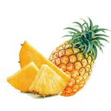

Fruits
Banana
 Read more information
Read more information
A banana is an elongated, edible fruit – botanically a berry – produced by several kinds of large herbaceous flowering plants in the genus Musa.
apple
 Read more information
Read more information
apple, (Malus domestica), domesticated tree and fruit of the rose family (Rosaceae), one of the most widely cultivated tree fruits.
Mango
Read more information
The term mango refers to the plant mango Mangifera indica as well as to its fruit.
Grapes
 Read more information
Read more information
A grape is a fruit, botanically a berry, of the deciduous woody vines of the flowering plant genus Vitis.
pineapple
 Read more information
Pineapple is native to tropical and subtropical America and has been introduced elsewhere.